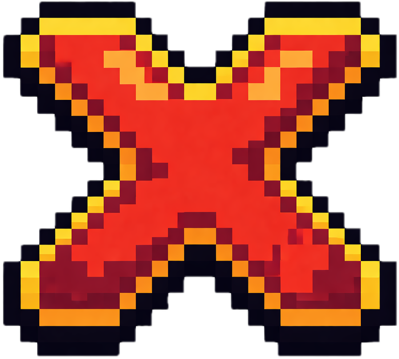

Gameplay-Uebersicht
Du baust und betreibst Racks mit Grafikkarten, die Bitcoins farmen
Alle Aktionen erfolgen ueber den PC
Die Kryptowaehrungskurse aendern sich waehrend des Spiels
Grundlegende Ablaeufe
Kauf von Komponenten (am PC):
Grafikkarten kaufen
Diese in die Racks einbauen
Grafikkarten austauschen:
Alte Grafikkarten aus den Racks entfernen
Neue (bessere/effizientere) Grafikkarten einbauen
Dies fuehrt zu hoeherer Bitcoin-Produktion
Bitcoin-Farming:
Die Grafikkarten in den Racks produzieren Bitcoins
Die Produktion laeuft kontinuierlich ab
Verkauf (am PC):
Bitcoins verkaufen
Der Verkaufskurs variiert (Kurs aendert sich)
Kurs-Mechanic:
Der Kurs fuer Kryptowaehrungen ist dynamisch
Du entscheidest, wann du verkaufst (guenstig oder teuer)
Ziel
Bitcoins farmen
Zum richtigen Zeitpunkt verkaufen
Mit dem Gewinn bessere Grafikkarten kaufen
Mehr Gewinn machen